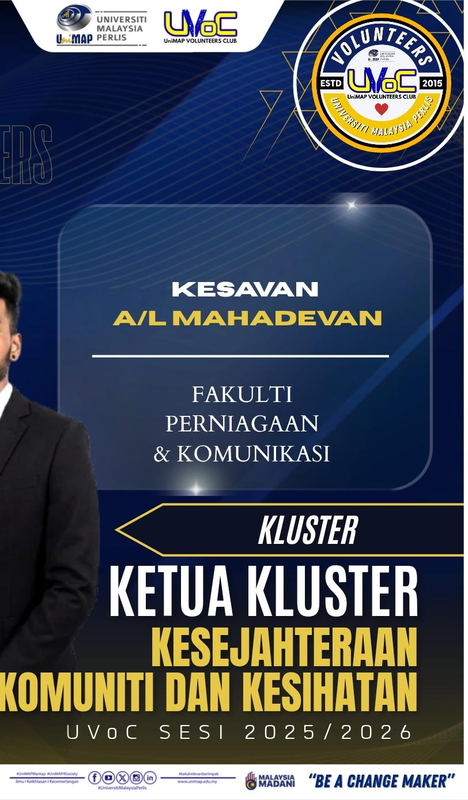

Leadership, University Programs & Activities
Throughout my university and leadership journey, I have actively participated in various organizations, programs and teamwork activities that helped strengthen my leadership, communication and management abilities.
Managed logistics planning, event preparation and coordination during university programs and activities.
Involved in student leadership management, communication and university event coordination.
Lead organizational activities and helped maintain teamwork, discipline and student cooperation.
Participated in university choir performances and collaborative multimedia events.
Joined community and volunteer activities focused on teamwork, charity and student engagement.
Developed leadership, confidence and communication skills through multiple university programs.
Example of participation and leadership involvement certificate.
